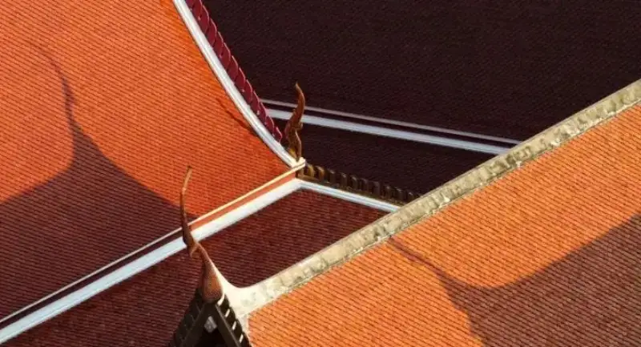
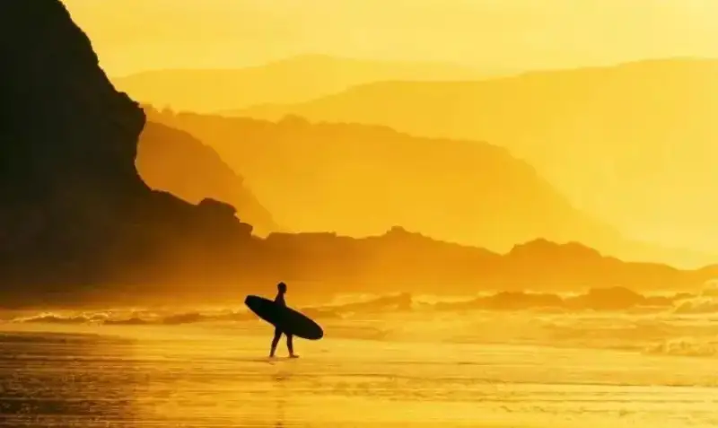
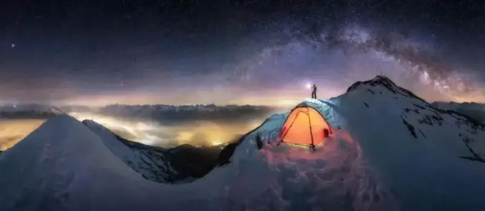
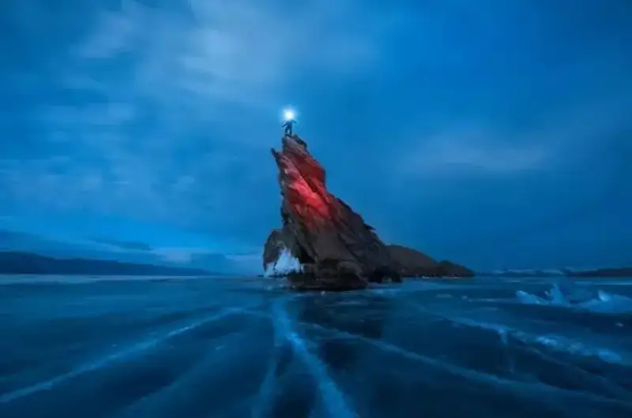
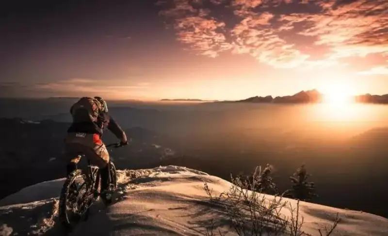
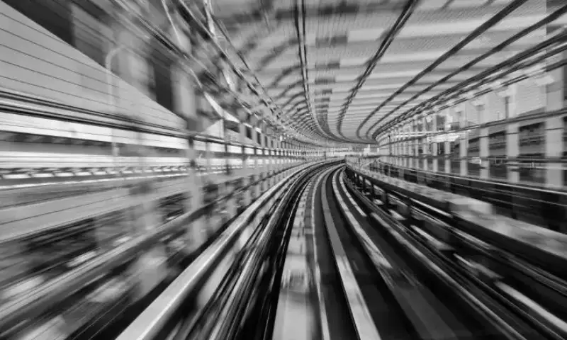
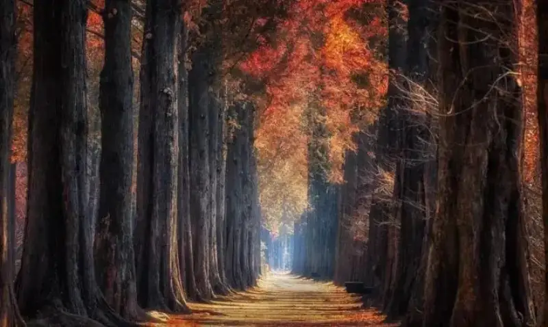

Landscape photography is the most common kind. You can shoot good landscape photos in daily life or when you travel.
In everyday shooting, people only look for a pretty view and ignore the sense of depth in the frame. How do you get depth? Try these 7 methods.
Method 1: Use light-dark contrast
The first method relies on the natural light and shade of the subject. For example, the light and shade on the roof in the photo comes from sunlight.

Or use a step-up of light and shade from near to far. In the photo below, the stepped light and shade of the beach person and the peaks gives the image a clear sense of depth.

Method 2: Use color contrast
When you shoot landscapes, the weather and color temperature change, so the colors of a view differ at different times of day.

The photographer can set the exposure for the theme they want to show. This makes the tone and color more appealing, and adds depth to the photo.

Color contrast is the method of placing contrasting elements together. When you use color contrast, put elements with clearly different colors into the frame. The contrast then becomes strong.

Method 3: Use sharp-blur contrast
In fact, the common wide-aperture background-blur technique uses sharp-blur contrast in the frame. It not only makes the subject stand out, but also gives the photo depth.

In landscape photography, a stepped blur from near to far creates a linear sharp-blur contrast, and this builds a rich sense of depth.

Method 4: Line perspective
Use the lines of the scene to build perspective. This also gives the frame a three-dimensional feel, and brings out the depth.

Whether the lines run up and down or side to side, regular lines of any kind form a special sense of depth.

Method 5: Use depth
Our eyes see near objects as large and far objects as small. When a photo has both near and far objects, it matches how we see, and the photo looks three-dimensional and deep.

In the photo, a road leads the viewer's eye from near to far. This clever use of depth in the composition adds depth to the whole image.

Method 6: A point of interest
A good photo must have a point of interest to draw the viewer's eye and carry a message. In landscape shooting, the golden ratio or the rule of thirds is a common choice.

In the photo, the foreground person is placed at a golden ratio point or a rule-of-thirds intersection. This adds variety to the frame and increases its depth.

Method 7: Add a foreground
Add some foreground to the frame to increase its depth. This method is simple, and the effect is clear.

When you shoot, pick a fitting element on site as a foreground. The subject then becomes a mid-ground, and the layers of the frame grow stronger.

For example, when you shoot a faraway peak, framing only the peak gives too little depth. You can then find some pretty flowers or plants, or even a pretty waterfall, as a foreground. This both raises the beauty of the frame and enriches its layers.